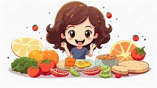
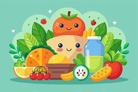
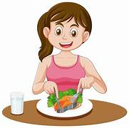

LA ALIMENTACIÓNINTRODUCCIÓN
La alimentación es la ingesta de alimentos por parte de los seres vivos para conseguir los nutrientes y la energía necesarios para vivir, logrando con ello un desarrollo equilibrado.

La alimentación es la acción y efecto de alimentar o alimentarse. Es un proceso mediante el cual los seres vivos consumen diferentes tipos de alimentos para obtener de estos los nutrientes necesarios para sobrevivir y realizar todas las actividades necesarias del día a día.
Para diferenciar entre la alimentación y la nutrición, la alimentación se refiere al proceso de consumir los alimentos que luego proveerán de nutrientes al organismo. La nutrición, en cambio, es el proceso tras la alimentación en el que el organismo busca nutrientes a partir de los alimentos consumidos, y los transforma en energía para sobrevivir y subsistir.

Los tipos de alimentación varían con relación al ser vivo y los tipos de alimentos que ingiere. Tenemos:
Alimentación humana. Los seres humanos somos organismos heterótrofos, pues dependemos de otras especies para alimentarnos y obtener los nutrientes necesarios. Las personas siguen diferentes regímenes alimentarios o dietas según sus convicciones o necesidades nutricionales.
TIPOS DE ALIMENTACIÓN |
|
|
|
|
|
|
|
|
|
| INICIO |
TRADICIONES |
MIGRACIÓN |
CICLO DEL AGUA |
ALIMENTACION SALUDABLE |